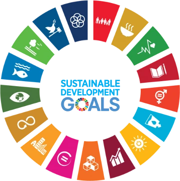

Are you ready tobecome a Founder?
Become a Founder and turn your ideas into impactful solutions that address real-world challenges, from global warming and hunger to poverty and inequality.
Our story
Founded with a vision to inspire positive change and foster innovation, Founder Ventures is the brainchild of a visionary entrepreneur dedicated to shaping a better future.
The driving force behind our philanthropic endeavors is an individual who, having achieved success as an entrepreneur, believes in the power of business to drive meaningful impact. Their generous contribution serves as the catalyst for Founder Ventures, a venture capitalist firm committed to supporting businesses, NGOs, and social ventures that tackle pressing global challenges.
Our mission
At Founder Ventures, our mission is to empower the next generation to play an active role in solving social and global problems. We firmly believe in the potential of innovative solutions to create lasting change. Our core values guide every decision we make:

Inspiration
We aim to inspire future generations by showcasing the positive impact that entrepreneurial ventures can have on the world.
Innovation
Founder Ventures is dedicated to supporting groundbreaking ideas that have the potential to revolutionize industries and drive positive social change.
Impact
Our focus extends beyond financial returns to prioritize investments that address critical issues such as hunger, poverty, gender inequality, global warming, and social disparity.
Visionary Founder
The financial roots of Founder Ventures stem from a visionary entrepreneur, successful in diverse ventures, now investing in the future. Motivated to inspire change, they empower a new generation with resources to address pressing global challenges. This philanthropic commitment highlights our belief in entrepreneurship as a force for good.
Impactful investments
Founder Ventures actively seeks investments that align with our thematic focus areas. Our rigorous due diligence process ensures that we not only consider financial viability but also evaluate the potential for social and environmental impact. We don't just provide capital; we forge active partnerships with our portfolio companies, offering mentorship, strategic guidance, and access to a broad network of experts.
Founder Ventures stands out as a nonprofit venture capitalist fund managed by philanthropic donors, distinguishing it from traditional VC models. Unlike conventional funds, any returns on capital are reinvested back into the fund, ensuring a continuous cycle of support for innovative projects addressing social and global challenges.